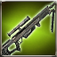
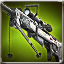
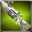
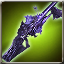
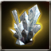
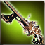
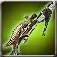
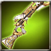
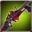
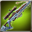

Crescemento Large Caliber Rifle
Available to equip above Lv. 1 - Recruitment character
Large Caliber Rifle that is decided the A.R. and ATK Power according to the players level.
Max 6 enhancement possible.
Attributes
Rating: 0

Available to equip above Lv. 1 - Recruitment character
Large Caliber Rifle that is decided the A.R. and ATK Power according to the players level.
Max 6 enhancement possible.

Available to equip above Lv. 1 - Recruitment character
Trial Large Caliber Rifle made as a tester to develop the powerful weapon. Cant be used continuously, as its durability wasnt considered while making.[ATK to All types+120%, Attack SPD+20%]
Available to equip above Lv. 1 - Recruitment character
17:00
Available to equip above Lv. 1 - Recruitment character
Trial Large Caliber Rifle made as a tester to develop a better quality weapon. It can not be used continuously since its durability was not considered while making.[All types of ATK +100%, ATK SPD +20%]

Lv.100 - Exclusive equipment for recruitment character /Exclusively for above Expert
A rifle that was honored to an overlord who had absolute power and great riches. It has a beautiful shape that helps the wearer perform well but also has grudges of people sacrificed by the overlord.

Lv.100 - Exclusive equipment for recruitment character / Master and above
A Large Caliber Rifle that was crafted by Armonium which maintained holy power in spite of erosion of Abyss. It maintains the weapon shape by the holy power, but the beautiful shape has been encroached and ominous. [Penetration+10, Immunity-5]
Available to equip above Expert Level - Recruit Character
Improved Large Caliber Rifle. The new technology of Vespanola has been applied to solve the overheating problem during its development process.
 Pure Essence x1800 Pure Essence x1800 |
 Fallen Essence x1800 Fallen Essence x1800 |
 Balance Essence x1800 Balance Essence x1800 |
 Ice crystal x500 |
 Fool Stone x1 Fool Stone x1 |
| Fool Stone x1 |
Available to equip above Expert Level - Recruit Character
A Large Caliber Rifle that specially manufactured for World X PVP.
Available to equip above Expert Level - Recruit Character
The item can not use Anti-Destroy item.

Available to equip above Expert Level - Recruit Character
In preparation for the re-invasion of the abyss, Pope Rudio II himself made a special request from Dr. Marchetti.[Penetration +5]
 Enchantchip Veteran x100 Enchantchip Veteran x100 |
 Shoot Weapon Crystal - Lv 34 x1 Shoot Weapon Crystal - Lv 34 x1 |
 Armonias Holywater x10 Armonias Holywater x10 |
| Fool Stone x1 |
| Fool Stone x1 |
Available to equip above Expert Level - Recruit Character
Improved Large Caliber Rifle. The new technology of Vespanola has been applied to solve the overheating problem during its development process.

Available to equip above High Master - Recruitment characters
This brand new Large Caliber Rifle was made at the request of Consul of Illier and based on Dr. Marchetts design plan. [Valerons Protection] can be added by Violet Valeron.
| Shoot Weapon Crystal - Lv 37 x1 |
 Silver Insignia of Patrikyon x100 Silver Insignia of Patrikyon x100 |
| Red Insignia of Magic Corps x100 |
 Symbol of Magi Ccorps x50 Symbol of Magi Ccorps x50 |
 Warped weapon debris x500 Warped weapon debris x500 |
 Shiny Sollarion x300 Shiny Sollarion x300 |
 liquid of Heaven x5 liquid of Heaven x5 |

Available to equip above High Master - Recruitment characters
Large Caliber Rifle containing Earth Master Atlas power
[PEN+10, Extra Damage to All Tribes+25%]
| Shoot Weapon Crystal - Lv 38 x1 |
| Armonium Ore - Red x500 |
| Armonium Ore - Red x500 |
 TimePiece : Rose x500 TimePiece : Rose x500 |
| TimePiece : Rose x900 |
 Vertrauen Symbol x1 Vertrauen Symbol x1 |
 Star Essence x50 Star Essence x50 |
Available to equip above High Master - Recruitment characters
Large Caliber Rifle containing Earth Master Atlas power
[PEN+10, Extra Damage to All Tribes+25%]

Available to equip above High Master - Recruitment characters
The weapon made to fight against Abyss Army by processing Earth-color Armonium containing Abyss Essence. It can retain the shape as a weapon thanks to the holy power, but its shape looks ominous owing to Abyss Essences power.{br}[Extra damage to Demon type enemy+25%]{br}[PEN+5]
| Shoot Weapon Crystal - Lv 38 x1 |
| liquid of Heaven x10 |
 Armonium Ore - Black x10000 Armonium Ore - Black x10000 |
| Fool Stone x1 |
| Fool Stone x1 |
Available to equip above High Master - Recruitment characters
The weapon made to fight against Abyss Army by processing Earth-color Armonium containing Abyss Essence. It can retain the shape as a weapon thanks to the holy power, but its shape looks ominous owing to Abyss Essences power.{br}[Extra damage to Demon type enemy+25%]{br}[PEN+5]

Available to equip above High Master - Recruitment characters
Mysterious Treasure Chest
Available to equip above High Master - Recruitment characters
Mysterious Treasure Chest
Available to equip above High Master - Recruitment characters
This brand new Large Caliber Rifle was made at the request of Consul of Illier and based on Dr. Marchetts design plan. [Valerons Protection] can be added by Violet Valeron.
Available to equip above High Master - Recruitment characters
Old weapon Violet Valeron restored in the past. Its performance is lower than the original version.{br}[ATK to all types+100%]
Available to equip above High Master - Recruitment characters
Khaki